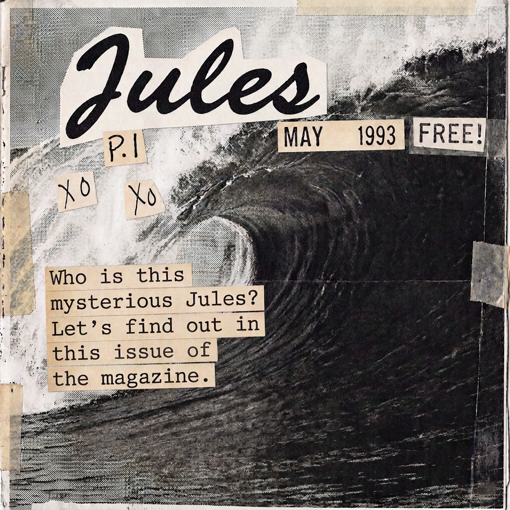

The short version
What I spend my time on
Placeholder copy for an alternating story block. Text on one side, image on the other — flips each time you add another one of these.

In 2025, I discovered surfing, and it gave me a new mindset, in a way. Before that, I found comfort in trying to learn web development and then branching out into automation testing. The first journey was completely solo; for the second, I found mentors.
Both things require patience, focus, and grinding—conditions I wish I could harness more consistently. This is the flow state I'm chasing, and I'm sharing some of the ride here along the way.
The short version
Placeholder copy for an alternating story block. Text on one side, image on the other — flips each time you add another one of these.

Currently
Another block, image order flips automatically on desktop via the nth-child rule, and stacks cleanly on mobile.

A few things worth showing.
The non-work stuff — interests, tangents, whatever doesn't fit neatly under "projects" but is still part of the picture.